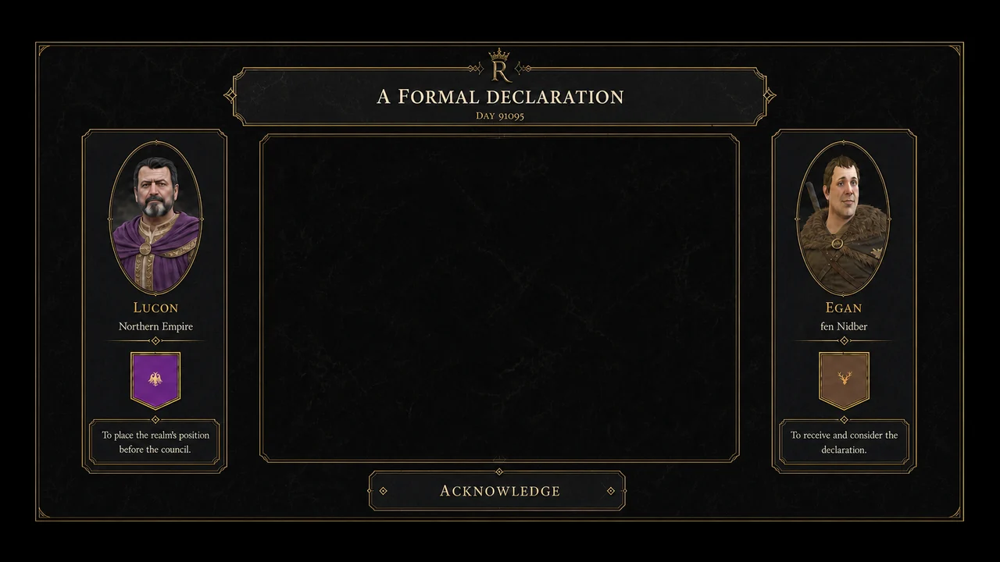

Time, news, and world events
Follow the calendar, news, and events that change the world around you.
A longer calendar and new-campaign differences
#Reign's year and seasons last longer than native Bannerlord's, and character aging follows that calendar. Existing campaigns receive anchors so adopting the calendar does not suddenly change everyone's apparent date or age. Read the game's actual dates and agreed deadlines rather than counting native-length years from memory.
New campaigns also include a deeper younger generation in eligible noble families and authored starting-age adjustments for Rhagaea and Ira. These are new-campaign setup changes; an update does not reseed children or overwrite ages in an established save. Newer narrative profiles likewise do not silently replace the life stories of old campaigns.
Background world motion begins after the initial preparation grace period. Political incidents, court business, relationships, and rare kingdom events need actual campaign time. Waiting for a cloud response in a paused conversation is not the same as advancing the calendar.
Kingdom catastrophes and boons
#These are occasional realm-wide events, with actual economic or political effects and later endings. They are not all variations of a generic prosperity bonus.
| Event | What changes |
|---|---|
| Famine / Bountiful Harvest | Village food contribution falls / improves |
| Pestilence / Population Boom | Village households decline / grow |
| Crime Wave / Law and Order | Settlement security worsens / improves |
| Trade Collapse / Trade Boom | Prosperity declines / improves |
| Construction Stagnation / Golden Age | Building work slows / accelerates |
| Political Unrest / National Unity | Loyalty worsens / improves |
| Border Crisis | An eligible new war begins |
| Grand Reconciliation | An eligible ordinary war ends |
| Orderly Succession | An eligible NPC ruler gives way to a ruling-clan heir |
Effects persist for their recorded duration. A golden age speeds construction; it does not automatically grant every unrelated benefit implied by the phrase. Orderly Succession does not automatically retire the player ruler. The MCM catastrophe-and-boon switch controls new natural events.
News and announcements
#Important diplomacy, ruler captures and judgments, kingdom-event beginnings/endings, and other eligible public outcomes appear through news. Ordinary captures do not all deserve a royal announcement. A sentence scheduled for later must be distinguished from an execution that has actually happened.
The announcement screen pauses campaign time while you read and acknowledge it. Long reports scroll. Turning a popup category off changes presentation; it does not undo the war, judgment, or harvest. New reports also reach the normal text window, and re-enabling a category does not replay a cancelled backlog.
After reading, Enter, Numpad Enter, or Escape acknowledges a ready announcement. These keys can resume the campaign after the report closes.
Tournament news can reach the local social scene immediately, and team victories should credit the actual winning team rather than only the player. Firsthand participation, general public news, and a distant NPC's knowledge are still different things.
